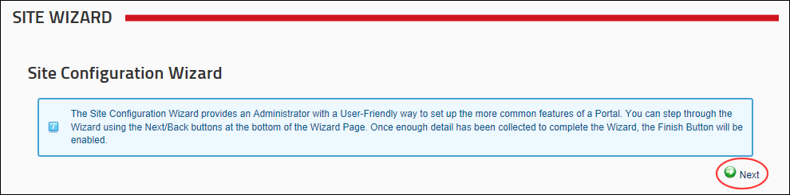
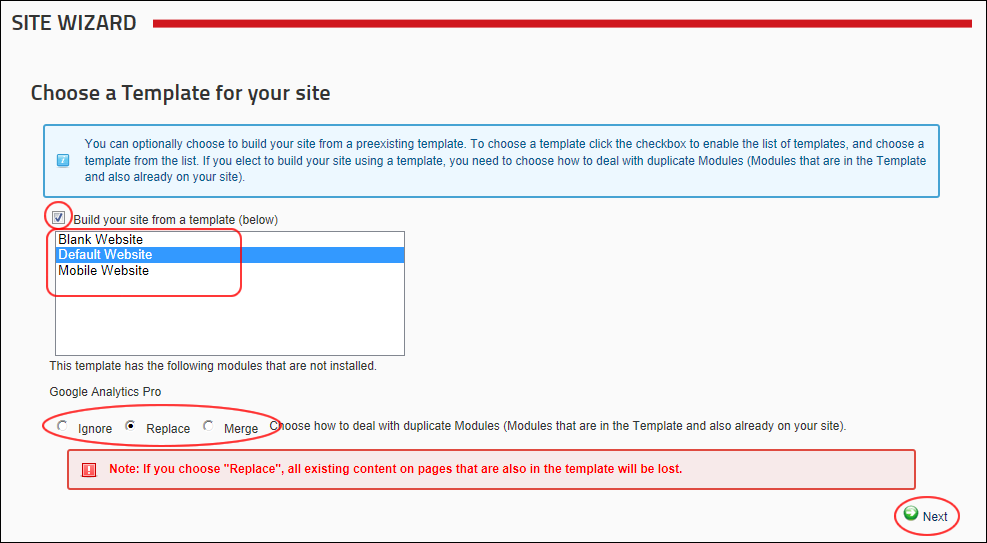
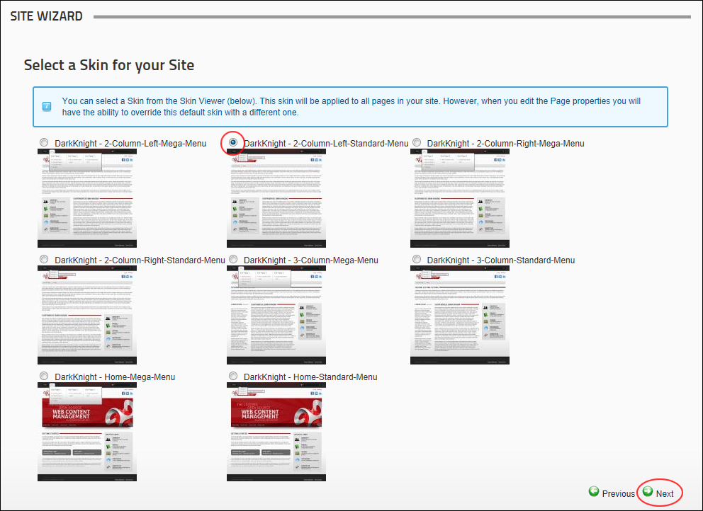
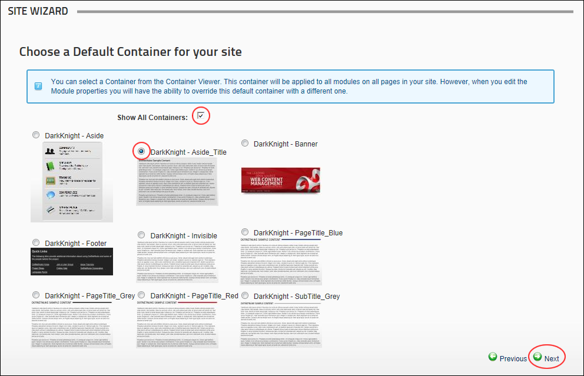
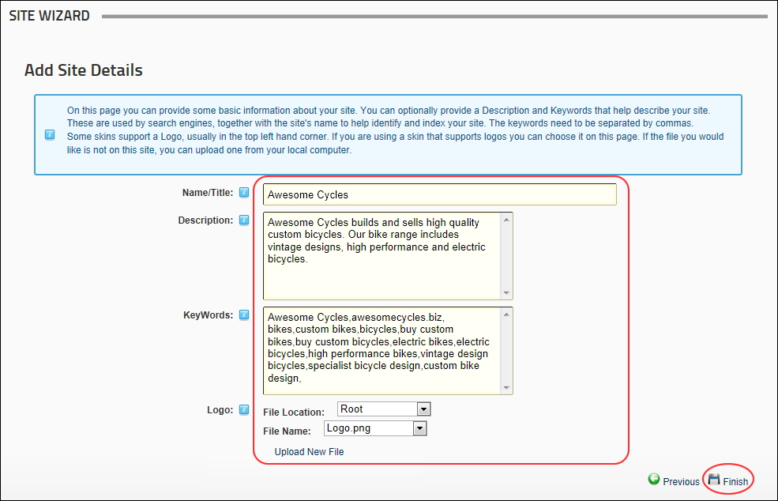

About the Site Wizard
The Site Wizard is a simple step-by-step wizard that allows you to configure basic site setting, choose a site design and use a site template that can include site content.
All users who are authorized to view the Site Wizard can complete the wizard, however only authenticated users can change the site logo and must have file upload permission to upload a new logo image.
Using the Site Wizard
Tip: All pages of the Site Wizard are options. If you don't want to perform a change on a particular screen, simply click the Next link to skip to the next page of the Site Wizard.
- Navigate to Admin > Advanced Settings >
 Site Wizard - OR - Go to a Site Wizard.
Site Wizard - OR - Go to a Site Wizard.
- On the Site Configuration Wizard page, review the introduction and then click the Next button.

- On the Choose a Template for your site page, you can choose to change the site template. Templates include pages and modules that may or may not include content. If you don't want to change templates, click the Next button to continue.
- At Build your site from a template (below), to display a list of templates for all languages installed on the site.
- Click on the name of a template to select it. This displays a description of the selected template.
- Choose one of the following options to set how duplicate modules will be handled:
- Ignore: Places a copy of any duplicated modules on the same page.
- Replace: Deletes the existing copy of the duplicate content and replaces it with the template copy. Deleted pages are moved to the Recycle Bin and the page name appended with _Old. E.g. The replaced Home page will be called Home_Old. Restoring these pages will only restore the page and not the modules or module content.
- Merge: Combines the existing information and template information into one module.
- Click the Next button.

- On the Select a Skin for your Site page, you can select a new default skin for site pages. This won't change the skin used on pages that aren't using the default skin. Note: From this page onwards, you can click the Previous link to return to the previous page.
- Optional. To preview a skin, click on the thumbnail image (where provided). This displays a larger image of the skin in a new Web browser.
- Select a skin.
- Click the Next button.

- On the Choose a Default Container for your site page, select a new default container to be used for modules. This won't change the container used on modules that aren't using the default container.
- If you selected a skin at Step 3, the matching containers are displayed here and the default container is pre-selected.
- Optional. at Show All Containers to view all of the available containers.
- Optional. To preview a container click on a thumbnail image (where provided). This displays a larger image of the container in a new Web browser.
- Select a container.
- Click the Next button.

- On the Add Site Details page, enter or edit the site details for this site. These are the default details used by search engines to index your site.
- In the Name/Title text box, enter the name or title to be applied to the site. This will show in visitor's Web browser title.
- In the Description text box, enter description to be applied to the site. This will be the description that Internet search engines will display to visitors. The site must be submitted to these search engines.
- In the KeyWords text box, enter keywords to be applied to the site. This will be what the Internet search engines look for if you choose to submit your site to them.
- At Logo, upload and/or select a new site logo. See "Setting a File Link" or See "Uploading and Linking to a File"
- Click the Finish button.

- You will not be redirected to the Home page of your site and any changes you made will be visible.